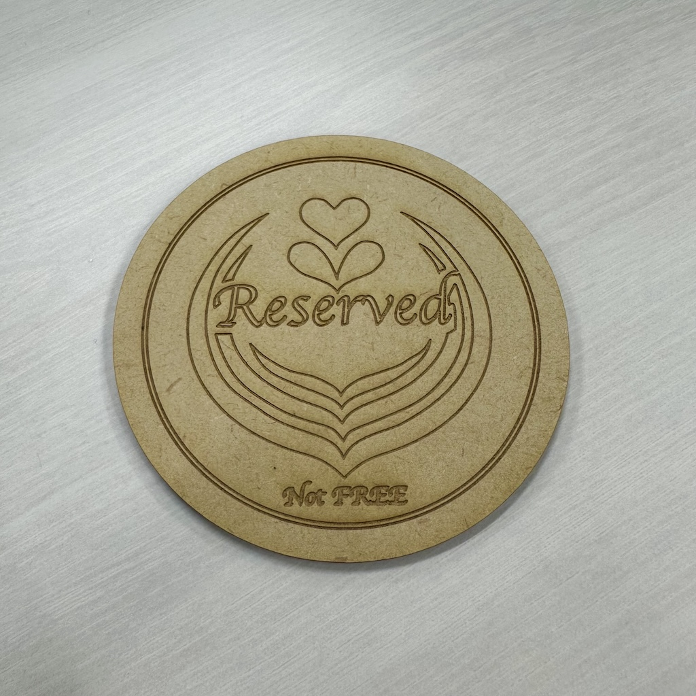
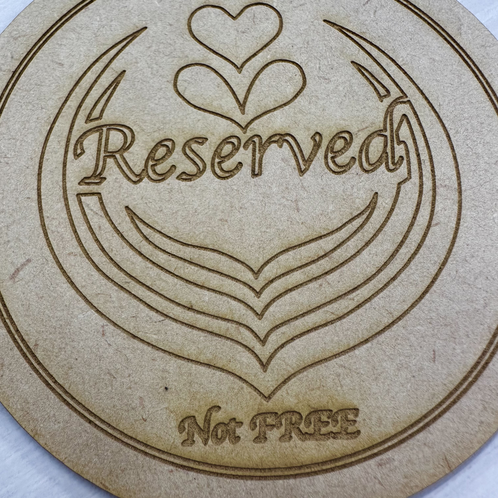

Design for Others
日常の中の問題
私がテーマとした問題は、座席確保問題」である。カフェなどに行った際、服などを置き座席を確保するという行為は誰もが経験したことがあるだろう。 この行為は「日本人同士の暗黙の了解」であり、外国人には通用しないと私は考えた。さらには、海外に行った際に私物で座席を確保すると 盗難などの可能性も考えられるのではないだろうか。そこで、店側が備え付けて置けるような、何か座席確保の目印となるものを作れないだろうかと私は考えた。
デザインを考える
製作する際の条件として以下のものが挙げられた。
①海外の人にもわかりやすいようにイラストと英語を使用する
②日本人でもわかるような簡単な英語を使う
③カフェにも馴染みやすいようなおしゃれなデザイン
④大量生産しやすいようなデザイン
これらを重視してデザインを考えていく。
デザイン完成

カフェでよく使用されるもので思い浮かんだのが、コースターであった。 カフェのオシャレな雰囲気にも馴染むように、「ラテアート」をイメージしたデザインにした。
完成


MDFボードとの相性がよく、オシャレな雰囲気になった。かなりいい感じ。時間があれば、裏面に「FREE」という文字を印刷し、 ひっくり返せば「空いてます」という意味をもつようにしたかった。しかし、今回は間に合わなかったので断念。
おわりに
使用機器：レーザーカッター 材料：MDFボード 厚さ2.5mm
データはこちら